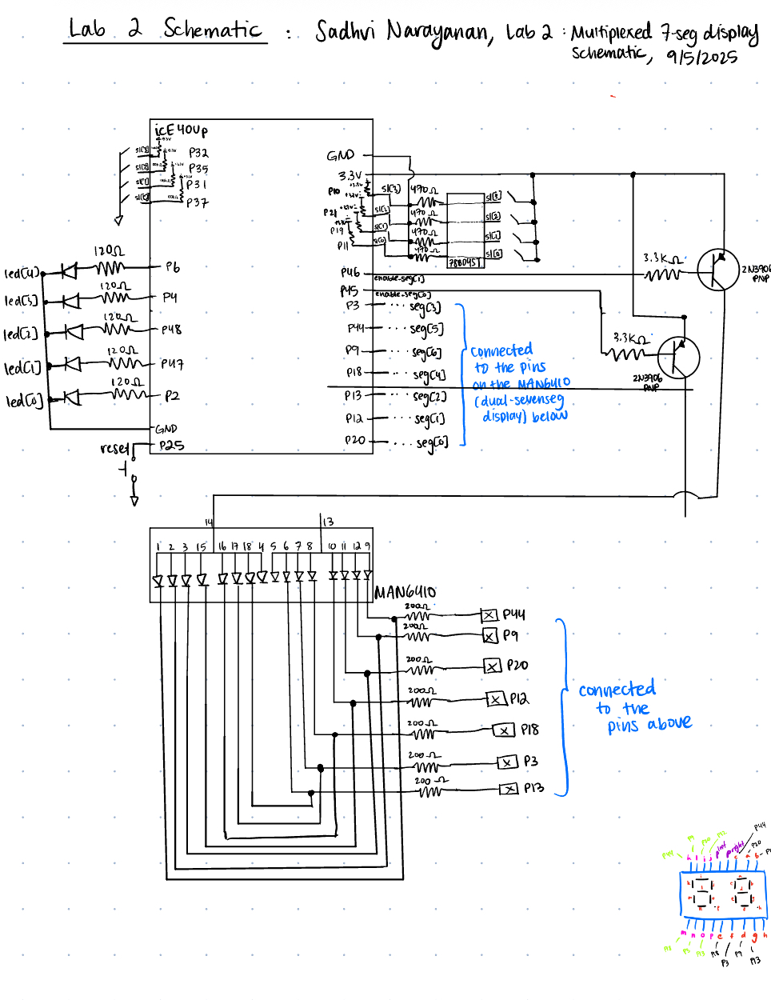
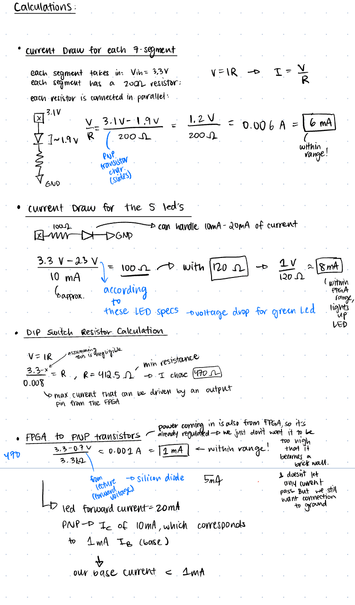
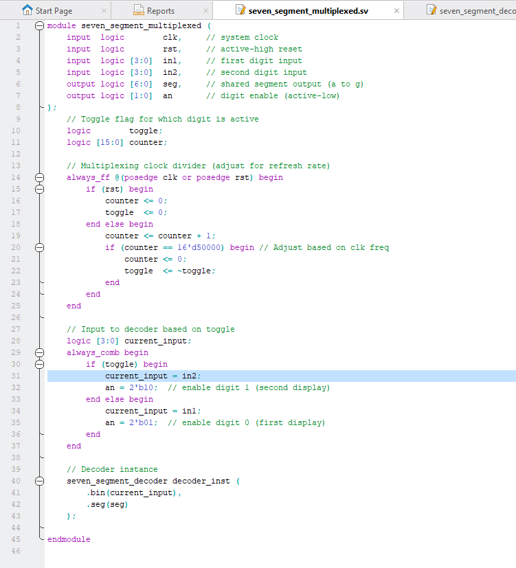

Lab 2 Report
Introduction
In this lab, we built a time-multiplexed seven segment display, which would share one single seven_segment decoder module, in order to display what looks like two numbers on the dual display at the same time. The module is a shared resource between both DIP-switch controlled numbers, so the overall goal was to time-multiplex the seven segment decoder to allow only one number to have access to the led display, but flash at a frequency fast enough to make it seem like both numbers were appearing at the same time (as though we had two different module instantiations). The numbers are controlled by two independent DIP switches.
Additionally, we have an LED that displays the sum of the numbers inputted in on both the DIP switches.
Design and Testing Methodology
There were various steps in implementing this lab. First, we could use the base code from lab 1, which was displaying a single DIP switches input into one seven segment LED display. But, for this lab, we created a clock which toggled at 60Hz from a clock divider - around the frequency of flicker free viewing for humans. Then, every 60Hz I would toggle a signal, which woudl essentially be the select signal for a mux which would decide which DIP switche’s input to display on the LED. Based on which DIP switch’s input was selected, that would be fed into the single, shared, seven segment module instantiation which would then display that number on the display. However, because we made our new clock toggle at 60Hz, the flicker free viewing frequency, both switch numbers are toggling so fast it looks like they are both displayed on the LED-display at the same time. Due to this, when building the circuit on the breadboard, I would only need 7 pins to connect to all the 14 different segments on the dual-display, because we designed it so that only 7 segments can be driven at a time, since there is only one seven segment module decoder. Additionally, the FPGA does not have enough power to drive the dual-segment LED display, so we had to connect the output of the FPGA pins to a PNP transistor which was connected to a 3.3V collecter, so everytime a high signal was asserted by any of the pins it would pull current from the collecter in order to provide enough power to the dual display. I had an enable signal that was two bits wide, and depending on the clock signal, would either provide a base to one of the two PNP transistors. And we also had 5 LEDs which would just display the sum of both the dip switches.
In order to test the design, I first isolated my clock divider module, so I could test that the clock was indeed running 60Hz. I created my own clock signal in the testbench, and then asserted that after 60Hz from the testbench, we were also toggling the clock in my clock module. Essentially, I made sure both clocks were running at the same frequency.
Then, in order to test the rest of my design, I had another testbench. This time, I did not use testvectors, but rather leveraged assert statements. I generated a counter that was 8-bits wide, and each time it would split this 8-bit bus into two 4-bit busses, which would simulate the inputs on both by 4-input DIP switches. I then made sure the addition of the led signal was equal to the sum of both of 4-bit busses. And then, based on the enable signal asserted from my top-level module, I made sure that the actual seven-segment output, matched with the one I was chosing based on the enable signal and switch value.
I made sure to calculate appropriate resistor values based on the maximum drivable current as well for all my pins.
Figure 1 shows the physical implementation the breadboard with the time-multiplexed segment visible.
Technical Documentation:
The source code for the project can be found in the associated Github repository
Block Diagram
The block diagram in Figure 2 demonstrates the overall design and architecture of the design. The top-level module incldes three sub-modules - the HSOSC (high-speed oscillator block), the clock, and the seven_segment module in order to convert hex digits to seven segments. The clock is essentially the clock divider which is taking care of toggling the clock at 60Hz. We can see the internal logic of the muxes as well, in order to multiplex the values given to the seven-segment module, based on the generated clock.
Schematic
 Figure 3 demonstrates the physical layout of the design. We have internal 100k-ohm pullup resistors in order to ensure the pins aren’t floating. We then have the DIP switch on the right connected to around a 420 ohm pull-down resistor on the left, and then power to the right. We have each of our PNP transistors connected to a 3.3V collecter, and a 330-ohm resistor in order to limit the current going into the transistor base. Each of our segments was connected to a pin, with two segments mapping to one pin due ot the shared seven-segment module. Each segment was connected to a 170 ohm resistor to limit the current going into the LED’s, while not exceeding the maximum current that can be driven by an FPGA pin. Our adder-sum LED’s are each connected to a 100ohm resistor to limit the current through the diodes to around 13mA, which is within its possible range.

In Figure 4 we can see all the calculations performed to ensure we are not drawing more current that possible from the FPGA pins - 8mA.
Results and Discussion
I was able to accomplish all of the prescribed tasks in this project. I also met all the intended design objectives, and was able to check off all the components in the spec, along with the excellence components. Figure 5 shows a screenshot of the QuestaSim Simulation of the clock module. This is the simulation run with the self checking test-bench without testvectors. Figure 6 shpws that our enable signal is toggling every few cycles in order to control which segment is being displayed on the display. Figure 7 shows the testbench designed for the overall top-level design, which was also designed without testvectors and was instead an assert based testbench.
If I was given more time, I would have tried to come up with other ways to test the clock signal using the in-built delays available in the testbench. I would have also made my wires on my breadboard more concise and neater, so it would have been easier to debug. The design performed exactly as intended.
Conclusion
The overall design, after all the testing, successfully time-multiplexes the seven-segment decoder to ensure that is a shared resource between two possible inputs from two independent DIP switches. Although the dual display can only be used by one DIP switches output at a time, the fast multiplexing makes it seem like both numbers are being displayed at the same time - as our eyes are not able to detect the flicker. I spent a total of 12 hours working on this lab.
AI Prototype Summary

Figure 8 shows the result of entering the prompt into ChatGPT - after some additional prompting. Initially it created two different instances of the module, because it maybe missed out on the idea of multiplexing, but after I prompted it to only instantiate one module, it created the output above which looks correct to me, and it synthesized fine.
Figure 9 shows the seven segment display decoder code that it generated, which also compiled fine and seems optimized and reasonable.
Overall, I would rate the quality of this code pretty good since it seems to be optimal in all the assignments, module interaction, and clock multiplexing that it does. In terms of verilog contstructs that were unknown to me, I did not see anything striking - I have used almost everything used in the AI version. However, the AI did make the counter a little different to mine, with the addition, and counter limit check under the same else conditional, however this was just a design decision. The AI code synthesized both times, I tried it, however the first time there was a logic gap in the way it did the time multiplexing. One important thing is that it is not running at the right frequency, it is running too fast since it is just using the HSOSC, so this would be something that might need more prompting. In terms of warning messages, I just got the expression size 32 bits truncated to fit in target size 16, but I have also been getting this warning message as well. The next time, I might give it a little more context on what I have available, and perhaps define some of the terms I am using - although this shouldn’t have been necessary. Also, it did not use the HSOSC oscillator that I am using because it did not have the context of the lab, and what we were using.
The output of the LLM after providing it with my seven segment decoder and the HSOSC code, is outlined in figure 10. This code good quality, but it did change quite a bit in terms of structure from the previous version. Again, the frequency is not correct as it is going too fast. It also split up the different parts of the code like the PNP enable signals, and the seg calcualtions into different stages which might make it more readable, but it is still functionally correct. There were no warning messages from this that were alarming - it is just interesting that it changed the structure into different units based on my lab 1 code that I had provided.